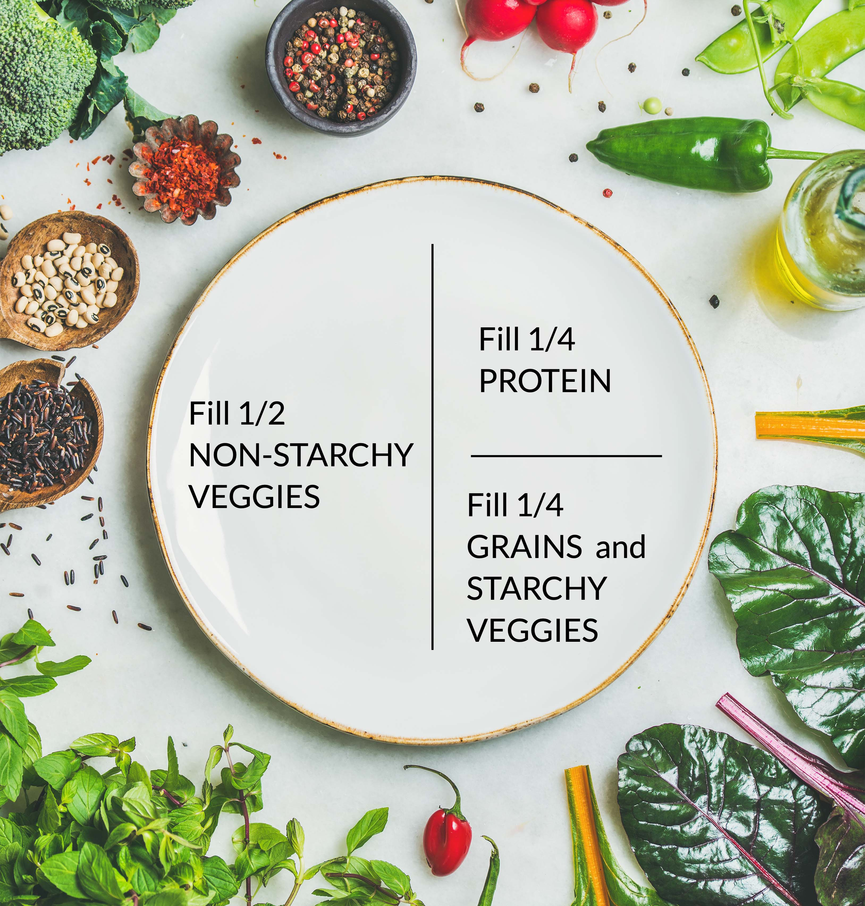

How Build a Healthy Plate
You need to find a balance between eating enough carbohydrates to get the energy and glucose you need and limiting the carbohydrates you eat to control your blood sugar levels. The best way to do this is to spread out your carbohydrates in all your meals and snacks.
To create a well-balanced meal, there are easy, general guidelines you can follow to check your portions at breakfast, lunch and dinner:

- Imagine your plate split into three sections: a half and 2 quarters.
- Fill half your plate with non-starchy vegetables. Examples: salad, steamed or grilled broccoli, spinach, cauliflower, eggplant.
- Fill quarter of your plate with whole grains or starchy vegetables Examples: baked potato, brown rice, bulgur.
- Fill the other quarter of your plate with a lean source of protein. Examples: grilled fish, chicken breast.
- Have 1 medium fruit or 1 cup dairy for a snack as your meal plan allows.
- Choose healthy fats in small amounts. Include healthy additions like nuts, seeds, avocado and vinaigrettes.
- Finish the meal with water.